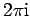
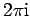

Inhalt Index DeskTop Bronstein

 Funktionentheorie Potenzreihenentwicklung analytischer Funktionen Isolierte singuläre Stellen und der Residuensatz
Funktionentheorie Potenzreihenentwicklung analytischer Funktionen Isolierte singuläre Stellen und der Residuensatz


Mit Hilfe der Residuen kann man den Wert eines Integrals über einen geschlossenen Weg berechnen, der isolierte singuläre Punkte umschließt (s. Abbildung).
Ist die Funktion f(z) in einem einfach zusammenhängenden Gebiet  , das von der geschlossenen Kurve K begrenzt wird, mit Ausnahme der endlich vielen Punkte eindeutig und analytisch, dann ist der Wert des im Gegenuhrzeigersinn über den geschlossenen Weg genommenen Integrals gleich dem Produkt aus  und der Summe der Residuen in allen diesen singulären Punkten:
, das von der geschlossenen Kurve K begrenzt wird, mit Ausnahme der endlich vielen Punkte eindeutig und analytisch, dann ist der Wert des im Gegenuhrzeigersinn über den geschlossenen Weg genommenen Integrals gleich dem Produkt aus  und der Summe der Residuen in allen diesen singulären Punkten:
| (14.55) |
| Beispiel |
|
Die Funktion f(z)=ez/(z2+1) hat die Pole 1. Ordnung . Die zugehörigen Residuen haben die Summe . Daher gilt, wenn K ein Kreis um den Nullpunkt mit dem Radius r>1 ist, |